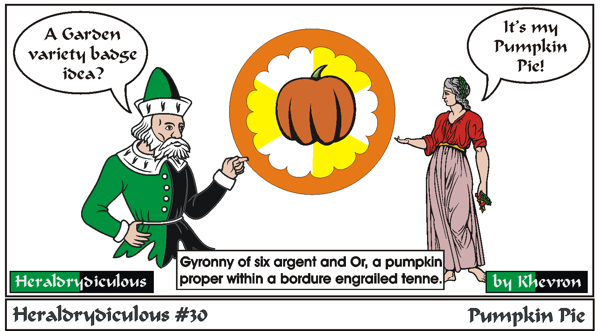

With a few exceptions, a badge adheres to the same rules as a device or arms. Someone's arms say "This is me" while their badge says "This is mine". Badges are used to mark ownership or items, or on livery for servants.
This wouldn't be a bad badge except for two things. Tenne, being orange isn't a color used in SCA period heraldry.
Orange was just considered a shade of red. The other is the field colors. Argent and Or are no longer legal to be used together next to each other in SCA heraldry in divisions more than four (i.e. gyronny, barry and chequey).
Idea by Grimr.
Back to Khevron's Heraldry Page